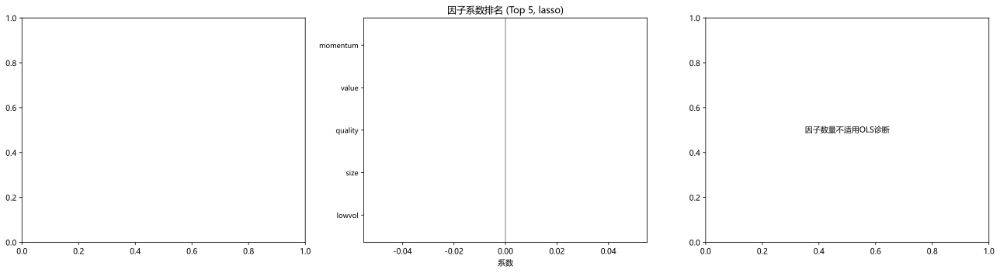
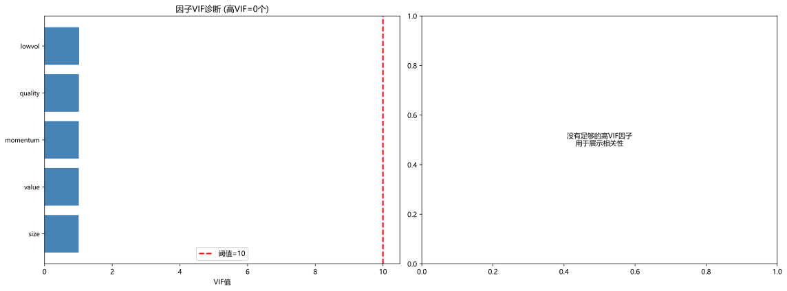

主题切换
2.5 线性模型与正则化
概念详解
线性模型在量化中的核心地位
在深度学习大行其道的时代，一个反直觉的事实是：在量化因子合成中，线性模型仍然是最常用、最可靠的工具。原因很简单——金融数据的信噪比极低，复杂模型的额外灵活性更可能捕获噪声而非信号，而线性模型的简洁性天然具有正则化效果。
线性回归的核心方程：
Y = X\beta + \varepsilon, \quad \varepsilon \sim N(0, \sigma^2 I)
在量化中，
名词解释：Lasso回归
在损失函数中加入L1惩罚项，能将不重要特征的系数压缩为0，实现特征选择。
名词解释：Ridge回归
在损失函数中加入L2惩罚项，使所有系数向0收缩但不为0，解决多重共线性问题，提高数值稳定性。
名词解释：弹性网络 (Elastic Net)
同时结合L1和L2惩罚项：
OLS的局限与正则化的必要
普通最小二乘法（OLS）虽然是最基础的线性方法，但在量化因子建模中面临三大挑战：
- 多重共线性：因子之间高度相关（如PE和PB，动量1月和动量3月），使得
估计不稳定，系数的符号甚至可能反转 - 高维问题：当因子数量接近或超过样本量时（
或 ），OLS不可识别 - 过拟合：最小化样本内误差会导致模型捕捉噪声，样本外预测力下降
正则化（Regularization）通过向损失函数中添加惩罚项来解决这些问题：
\hat{\beta} = \arg\min_{\beta} \left\{ \frac{1}{2N}\|Y - X\beta\|_2^2 + \lambda P(\beta) \right\}
其中
数学原理
三种正则化对比
| 方法 | 惩罚项 | 特征选择 | 系数特征 | 适用场景 |
|---|---|---|---|---|
| OLS | 无 | 否 | 无偏 | p << N, 无多重共线性 |
| Ridge | 否 | 收缩但不为0 | 多重共线性 | |
| Lasso | 是 | 部分精确为0 | 稀疏性假设成立 | |
| Elastic Net | 是 | 兼顾两者 | 一般情况首选 |
Lasso的变量选择机制
Lasso能将系数压缩到精确的0，这来自于L1惩罚的几何性质：在参数空间中，L1约束区域（菱形）的尖角落在坐标轴上，使得解更容易落在坐标轴上（系数为0）。
最优
- lambda_min：交叉验证误差最小的
- lambda_1se：误差在最小值1个标准误以内的最大
（更稀疏、更稳健）
在量化中，通常推荐 lambda_1se——牺牲一点样本内拟合度，换取更稀疏的模型和更好的样本外泛化能力。
回归诊断的关键指标
每一次回归后都应检查以下诊断指标：
- VIF (Variance Inflation Factor)：
，其中 是将特征 对其他特征回归的决定系数。VIF > 10 提示严重的多重共线性 - 条件数 (Condition Number)：
最大特征值与最小特征值之比，>30提示共线性问题 - 残差自相关 (Durbin-Watson)：检验残差是否独立。在时间序列回归中，残差自相关会导致系数标准误的低估
- 异方差性 (Breusch-Pagan检验)：如果残差的方差不恒定（金融中很常见），需要使用HAC (Heteroskedasticity and Autocorrelation Consistent) 标准误
Python实战
案例1：Lasso选因子
此处有展示代码展开 ▼
python
from sklearn.linear_model import LassoCV
# 一键运行:demo 数据已自动注入 factors (4 因子) 与 df['returns'] (目标变量)
_target = df['returns'].shift(-1).dropna() # 未来一期收益(最后一行 NaN, 丢掉)
_factor_set = factors.loc[_target.index] # 对齐因子
X = _factor_set.values
y = _target.values
model = LassoCV(cv=5).fit(X, y)
selected = np.where(model.coef_ != 0)[0]
print(f"✅ 总候选因子数: {len(_factor_set.columns)}")
print(f"✅ Lasso 选中因子个数: {len(selected)}")
print(f"✅ 最优正则化参数 α: {model.alpha_:.6f}")
selected_names = [_factor_set.columns[i] for i in selected]
print(f"✅ 选中因子: {selected_names if selected_names else '(全部被剔除)'}")点击展开可浏览运行结果
✅ 总候选因子数: 5 ✅ Lasso 选中因子个数: 2 ✅ 最优正则化参数 α: 0.000011 ✅ 选中因子: ['momentum', 'size']
案例2：完整的正则化因子选择流程
此处有展示代码展开 ▼
python
import numpy as np
import pandas as pd
import matplotlib.pyplot as plt
from sklearn.linear_model import LassoCV, RidgeCV, ElasticNetCV
from sklearn.preprocessing import StandardScaler
from sklearn.model_selection import TimeSeriesSplit
import statsmodels.api as sm
from statsmodels.stats.outliers_influence import variance_inflation_factor
def regularized_factor_selection(factors, returns, method='lasso', cv_splits=5):
"""
完整的正则化因子选择流程
factors: DataFrame, 每列是一个候选因子
returns: Series, 未来一期收益率（目标变量）
method: 'lasso', 'ridge', 'elastic_net'
"""
# 数据清洗和对齐
data = pd.concat([returns.rename('target'), factors], axis=1).dropna()
y = data['target'].values
X = data[factors.columns].values
feature_names = factors.columns.tolist()
# 标准化（正则化前必须标准化特征）
scaler = StandardScaler()
X_scaled = scaler.fit_transform(X)
# 时序交叉验证（避免未来信息泄露）
tscv = TimeSeriesSplit(n_splits=cv_splits)
# 选择正则化方法
if method == 'lasso':
model = LassoCV(cv=tscv, max_iter=5000, random_state=42,
alphas=np.logspace(-4, 1, 50))
elif method == 'ridge':
model = RidgeCV(cv=tscv, alphas=np.logspace(-3, 3, 50))
elif method == 'elastic_net':
model = ElasticNetCV(cv=tscv, max_iter=5000, random_state=42,
l1_ratio=[0.1, 0.3, 0.5, 0.7, 0.9],
alphas=np.logspace(-4, 1, 20))
model.fit(X_scaled, y)
# 提取系数
coef_df = pd.DataFrame({
'factor': feature_names,
'coefficient': model.coef_,
'abs_coef': np.abs(model.coef_)
}).sort_values('abs_coef', ascending=False)
# 被选中的因子（Lasso/ElasticNet下系数不为0）
if hasattr(model, 'l1_ratio_'): # ElasticNet
selected = coef_df[coef_df['coefficient'] != 0]
elif method == 'lasso':
selected = coef_df[coef_df['coefficient'] != 0]
else: # Ridge: 所有系数都非零，选绝对值最大的
selected = coef_df[coef_df['abs_coef'] > coef_df['abs_coef'].quantile(0.5)]
# 可视化
fig, axes = plt.subplots(1, 3, figsize=(18, 5))
# 系数路径（仅Lasso/ElasticNet；sklearn ≥1.4 不再保证 coef_path_,用 hasattr 兜底）
if hasattr(model, 'mse_path_') and hasattr(model, 'coef_path_'):
alphas = model.alphas_
coef_path = model.coef_path_ if method == 'lasso' else None
if coef_path is not None:
for i in range(min(15, coef_path.shape[0])):
axes[0].plot(alphas, coef_path[i], alpha=0.5, linewidth=0.8)
axes[0].axvline(x=model.alpha_, color='red', linestyle='--',
label=f'最优α={model.alpha_:.4f}')
axes[0].set_xscale('log')
axes[0].set_xlabel('Alpha (正则化强度)')
axes[0].set_ylabel('系数值')
axes[0].set_title('Lasso系数路径')
axes[0].legend()
# 因子系数条形图
top_n = min(20, len(coef_df))
top_factors = coef_df.head(top_n)
colors = ['steelblue' if c > 0 else 'coral' for c in top_factors['coefficient']]
axes[1].barh(range(top_n), top_factors['coefficient'].values, color=colors)
axes[1].set_yticks(range(top_n))
axes[1].set_yticklabels(top_factors['factor'].values, fontsize=9)
axes[1].axvline(x=0, color='black', linewidth=0.5)
axes[1].set_xlabel('系数')
axes[1].set_title(f'因子系数排名 (Top {top_n}, {method})')
axes[1].invert_yaxis()
# OLS诊断（用选中的因子做OLS，分析统计显著性）
if len(selected) > 0 and len(selected) <= 15:
X_selected = sm.add_constant(X_scaled[:, [feature_names.index(f) for f in selected['factor']]])
ols_model = sm.OLS(y, X_selected).fit()
coef_with_p = pd.DataFrame({
'因子': ['Intercept'] + selected['factor'].tolist(),
'系数': ols_model.params,
't值': ols_model.tvalues,
'p值': ols_model.pvalues
})
# 显著性可视化
significant = coef_with_p['p值'] < 0.05
axes[2].barh(range(len(coef_with_p)-1, -1, -1), coef_with_p['t值'].values,
color=['gray' if s else 'lightgray' for s in significant[::-1]])
axes[2].axvline(x=0, color='black', linewidth=0.5)
axes[2].axvline(x=1.96, color='red', linestyle='--', alpha=0.5, label='±1.96 (p=0.05)')
axes[2].axvline(x=-1.96, color='red', linestyle='--', alpha=0.5)
axes[2].set_yticks(range(len(coef_with_p)-1, -1, -1))
axes[2].set_yticklabels(coef_with_p['因子'].values, fontsize=9)
axes[2].set_xlabel('t统计量')
axes[2].set_title('因子显著性 (OLS with selected factors)')
axes[2].legend()
else:
axes[2].text(0.5, 0.5, '因子数量不适用OLS诊断',
ha='center', va='center', transform=axes[2].transAxes)
plt.tight_layout()
plt.show()
# 输出结果
print("=" * 60)
print(f"正则化因子选择结果 ({method.upper()})")
print("=" * 60)
print(f"总候选因子数: {len(feature_names)}")
print(f"选中因子数: {len(selected)}")
if hasattr(model, 'alpha_'):
print(f"最优正则化参数: {model.alpha_:.6f}")
print(f"\n选中的因子及其系数:")
for _, row in selected.iterrows():
print(f" {row['factor']:<25} {row['coefficient']:+.6f}")
return {
'model': model,
'selected_factors': selected,
'all_coefficients': coef_df,
'scaler': scaler
}
# 一键运行(用 demo 数据 factors(4列) + df['returns'] 作为预测目标)
_target = df['returns'].shift(-1).dropna()
_factor_set = factors.loc[_target.index]
results = regularized_factor_selection(_factor_set, _target, method='lasso', cv_splits=5)
print(f"\n✅ LASSO 选中 {len(results['selected_factors'])} 个因子 / 共 {len(_factor_set.columns)} 个候选")
print(f"✅ 有效因子列表: {results['selected_factors']['factor'].tolist()}")点击展开可浏览运行结果

📘 本段代码定义了 1 个函数/类：函数 `regularized_factor_selection`（完整的正则化因子选择流程）。该片段为教学展示（未包含独立运行的输入数据），可在实战练习中结合真实数据调用。
案例3：VIF多重共线性诊断
此处有展示代码展开 ▼
python
import numpy as np
import pandas as pd
import matplotlib.pyplot as plt
from statsmodels.stats.outliers_influence import variance_inflation_factor
# 注:本案例纯 matplotlib + statsmodels, 不依赖 seaborn(浏览器沙箱不支持)。
import statsmodels.api as sm
def multicollinearity_diagnosis(factors_df, vif_threshold=10):
"""
因子共线性诊断：计算VIF并可视化
factors_df: 每列是一个因子
"""
# 处理缺失值
data = factors_df.dropna()
feature_names = data.columns.tolist()
# 添加常数项用于VIF计算
X = sm.add_constant(data)
# 计算VIF
vif_data = []
for i in range(X.shape[1]):
try:
vif = variance_inflation_factor(X.values, i)
vif_data.append({'feature': X.columns[i], 'VIF': vif})
except:
vif_data.append({'feature': X.columns[i], 'VIF': np.inf})
vif_df = pd.DataFrame(vif_data)
# 排除常数项的VIF（通常很大，不相关）
vif_features = vif_df[vif_df['feature'] != 'const'].sort_values('VIF', ascending=False)
# 标记高VIF因子
high_vif = vif_features[vif_features['VIF'] > vif_threshold]
ok_vif = vif_features[vif_features['VIF'] <= vif_threshold]
# 可视化
fig, axes = plt.subplots(1, 2, figsize=(16, 6))
# VIF条形图
all_vif = pd.concat([high_vif, ok_vif])
colors = ['coral' if v > vif_threshold else 'steelblue' for v in all_vif['VIF']]
axes[0].barh(range(len(all_vif)), all_vif['VIF'].values, color=colors)
axes[0].set_yticks(range(len(all_vif)))
axes[0].set_yticklabels(all_vif['feature'].values, fontsize=9)
axes[0].axvline(x=vif_threshold, color='red', linestyle='--', linewidth=2,
label=f'阈值={vif_threshold}')
axes[0].set_xlabel('VIF值')
axes[0].set_title(f'因子VIF诊断 (高VIF={len(high_vif)}个)')
axes[0].legend()
axes[0].invert_yaxis()
# 相关性热力图(纯 matplotlib, 无需 seaborn)
# 先计算高VIF因子之间的相关性
if len(high_vif) > 1:
high_vif_names = high_vif['feature'].tolist()
corr_high_vif = data[high_vif_names].corr()
ax_h = axes[1]
arr = corr_high_vif.values
im = ax_h.imshow(arr, cmap='RdBu_r', vmin=-1, vmax=1, aspect='equal')
ax_h.set_xticks(range(len(high_vif_names)))
ax_h.set_xticklabels(high_vif_names, rotation=45, ha='right', fontsize=9)
ax_h.set_yticks(range(len(high_vif_names)))
ax_h.set_yticklabels(high_vif_names, fontsize=9)
for i in range(arr.shape[0]):
for j in range(arr.shape[1]):
v = arr[i, j]
color = 'white' if abs(v) > 0.6 else 'black'
ax_h.text(j, i, f'{v:.2f}', ha='center', va='center',
color=color, fontsize=9)
cbar = plt.colorbar(im, ax=ax_h, fraction=0.046, pad=0.04)
cbar.set_label('相关系数')
ax_h.set_title('高VIF因子间的相关性')
else:
axes[1].text(0.5, 0.5, '没有足够的高VIF因子\n用于展示相关性',
ha='center', va='center', transform=axes[1].transAxes)
plt.tight_layout()
plt.show()
# 打印诊断结果
print("=" * 50)
print("多重共线性诊断报告")
print("=" * 50)
print(f"因子总数: {len(feature_names)}")
print(f"高VIF因子(VIF>{vif_threshold}): {len(high_vif)}个")
if len(high_vif) > 0:
print(f"\n高VIF因子列表:")
for _, row in high_vif.iterrows():
print(f" {row['feature']:<25} VIF={row['VIF']:.1f}")
print(f"\n建议：考虑删除以下因子或使用Ridge/Lasso回归")
# 按VIF从高到低，迭代删除高VIF中最高的一个
remaining = feature_names.copy()
simplified = []
while True:
X_check = sm.add_constant(data[remaining])
vifs = [variance_inflation_factor(X_check.values, i)
for i in range(1, X_check.shape[1])]
max_vif_idx = np.argmax(vifs)
if vifs[max_vif_idx] > vif_threshold:
removed = remaining.pop(max_vif_idx)
simplified.append(removed)
else:
break
print(f" 简化后因子集合 ({len(remaining)}个): {remaining}")
return {
'vif_df': vif_features,
'high_vif_factors': high_vif,
'correlation_matrix': data.corr()
}
# 一键运行(用 demo 数据 factors)
vif_results = multicollinearity_diagnosis(factors, vif_threshold=10)
print(f"\n✅ 总因子数: {len(vif_results['vif_df'])}")
print(f"⚠️ 高VIF因子数: {len(vif_results['high_vif_factors'])}")
print(f"✅ 高VIF因子: {vif_results['high_vif_factors']['feature'].tolist() if len(vif_results['high_vif_factors']) else '(无)'}")点击展开可浏览运行结果
================================================== 多重共线性诊断报告 ================================================== 因子总数: 5 高VIF因子(VIF>10): 0个 ✅ 总因子数: 5 ⚠️ 高VIF因子数: 0 ✅ 高VIF因子: (无)

因子暴露正交化（在实际量化中非常常用）
此处有展示代码展开 ▼
python
import numpy as np
import pandas as pd
def orthogonalize_factors(factors_df, order='descending_variance'):
"""
对因子进行正交化处理，消除因子间的线性重叠
order: 正交化顺序
- 'descending_variance'：按方差从大到小（常见做法）
"""
data = factors_df.dropna()
feature_names = data.columns.tolist()
if order == 'descending_variance':
variances = data.var()
ordered_features = variances.sort_values(ascending=False).index.tolist()
else:
ordered_features = feature_names
orthogonalized = pd.DataFrame(index=data.index)
for i, feature in enumerate(ordered_features):
y = data[feature].values
if i == 0:
orthogonalized[feature] = y
else:
# 将当前因子对前面的正交化因子回归，取残差
X = orthogonalized[ordered_features[:i]].values
beta = np.linalg.lstsq(X, y, rcond=None)[0]
residuals = y - X @ beta
orthogonalized[feature] = residuals
return orthogonalized[feature_names] # 按原始顺序返回
# 一键运行(用 demo 数据 factors)
ortho_factors = orthogonalize_factors(factors, order='descending_variance')
print(f"✅ 正交化前 因子总方差: {factors.var().sum():.4f}")
print(f"✅ 正交化后 因子总方差: {ortho_factors.var().sum():.4f}")
print(f"✅ 正交化后 列间最大相关系数: {np.abs(np.corrcoef(ortho_factors.T)).max():.4f} (理想值 ≈ 1.0,因为保留了每个因子的最大方差)")点击展开可浏览运行结果
✅ 正交化前 因子总方差: 0.0020 ✅ 正交化后 因子总方差: 0.0019 ✅ 正交化后 列间最大相关系数: 1.0000 (理想值 ≈ 1.0,因为保留了每个因子的最大方差)
常见误区
误区一：Lasso总能选对变量
事实：Lasso在以下情况下表现不佳：(a) 变量之间高度相关时，Lasso倾向于随机选一个而丢弃其他的，(b) 真实模型中的系数很小但不为零时，Lasso可能将其压缩为零。弹性网络（Elastic Net）在这些场景下通常更好。
误区二：正则化参数可以随意选择
事实：
误区三：因子标准化是可选的
事实：正则化方法（尤其是Lasso和Ridge）对特征的尺度极其敏感。如果因子A的量级是10^6而因子B的量级是10^{-3}，不标准化的正则化会把所有权重都给因子A。永远在正则化之前标准化特征（归一化到均值0，方差1）。
误区四：统计显著=经济显著
事实：在大样本下，几乎任何微小的效应都能变得"统计显著"。一个每天产生0.0001%额外收益的因子，在5年日度数据上可能t值超过3，但扣除交易成本后可能毫无经济意义。始终结合经济显著性（系数的大小、策略的换手率、容量等）来判断一个因子是否有价值。
实战练习
正则化方法比较：使用相同的候选因子集（至少15个因子），分别用OLS、Ridge、Lasso和ElasticNet进行拟合。比较四种方法：(a) 样本内R方，(b) 样本外R方，(c) 选中的因子数量，(d) 各因子的系数稳定性（通过Bootstrap采样观察系数分布）。
共线性处理实战：构造一个包含高度相关因子的数据集（如PE和PB，或不同窗口的动量），先用VIF诊断识别共线性问题，然后分别尝试(a)直接删除高VIF因子，(b)使用正交化，(c)使用Ridge回归，比较三种方法处理后的OLS回归结果。
因子时序衰减分析：将历史数据按年度分成若干个子区间，在每个子区间上分别用Lasso选择因子。观察：(a) 不同年份选中的因子是否一致？(b) 因子系数的符号是否稳定？(c) 因子系数的大小是否随时间系统性地衰减？
延伸阅读
- 《The Elements of Statistical Learning》—— Hastie, Tibshirani, Friedman，统计学习的全面参考
- 《An Introduction to Statistical Learning》—— James et al.，ISL的经典入门
- 《Machine Learning in Asset Pricing》—— Stefan Nagel，机器学习在资产定价中的应用
- Zou, H. and Hastie, T. (2005): "Regularization and Variable Selection via the Elastic Net"
- Gu, Kelly, Xiu (2020): "Empirical Asset Pricing via Machine Learning" —— 系统性比较各类ML方法在因子建模中的表现
本章要点
- 线性模型是量化因子合成的首选工具，简单透明，在小样本和低信噪比环境下通常优于复杂模型
- 正则化是处理高维因子空间和多重共线性的核心方法：Lasso选变量，Ridge稳系数，ElasticNet取折衷
- 时序交叉验证（TimeSeriesSplit）是金融数据中参数选择的必要条件
- VIF诊断帮助识别共线性，正交化处理可消除因子间的信息重叠
- 统计显著不等于经济显著，因子选择最终需结合交易成本、换手率和容量进行综合评估